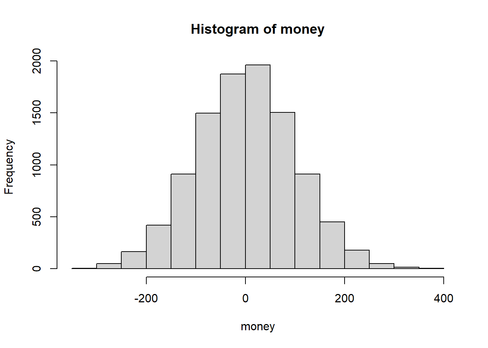
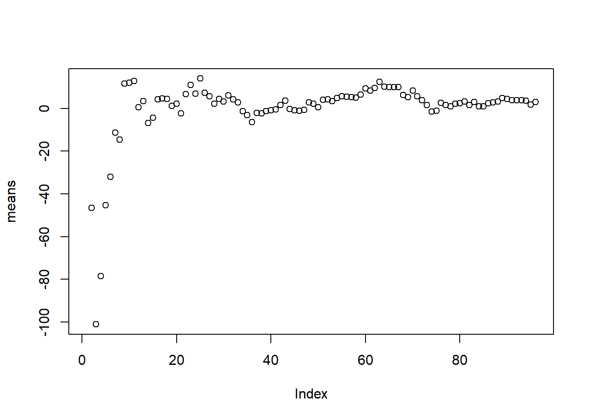
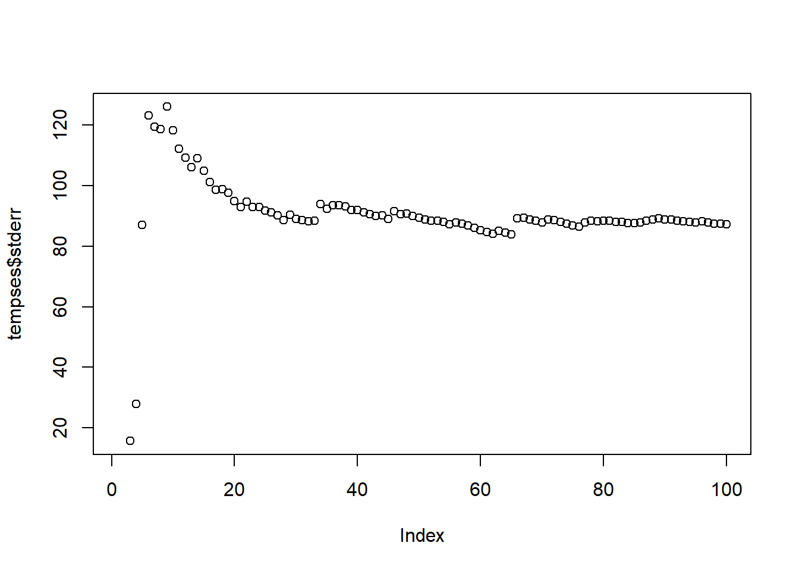

Lab 8 - Uncertainty and Confidence
Today we will be gambling.
You have taken $1000 to the casino. There are two games available at this casino. Your job is to conduct data analyses to decide how much to bet, and on which games. You may play as many rounds as you like.
The two games available are creatively named “Finite-Sample Demonstration” and “Asymptotic Demonstration”.
Finite-sample demonstration
The first game works as follows:
There is a pile of 10,000 cards, each with some real number written on it. You select one card and win the amount of money written on that card (if negative, you pay the casino) The game costs $50 to play.
Run the below code to start up the game. You don’t need to know how this code works.
set.seed(2025)
# Generate a simulated population of 10,000 observations
simdat <- rnorm(10000, mean = 51, sd = 100)Before you play, you want to know how the population is distributed.
Let’s say for now that the casino is run by exemplary and honest
individuals who provide you the data for all numbers written on the
cards (simdat). What is the population mean and population
variance? What is your expected net profit for playing one game? Create
a new variable money, a vector of net profits for each
potential card you could pull.
mean(simdat)## [1] 51.52973sd(simdat)^2## [1] 10039.05money <- simdat - 50
hist(money)
Next week, however, the Casino is changing owners, and the new owners will not be so kind as to provide you the data on all cards. You recall the Law of Large Numbers:
Given independent and identically distributed samples \(X_1, X_2, \cdots, X_n\), as \(n \rightarrow \infty\), \(\bar{X} = \frac{\sum_{i=1}^n X_i}{n} \rightarrow \mathbb{E}[X]\)
You plan on sitting in on other people’s games to get an idea of what the population distribution of numbers is. With the caution characteristic of gamblers, you decide to try out your strategy this week to see if it works. You sit at a table and observe 5 rounds of other peoples’ games. You don’t need to know how to do this in code.
simslice <- sample(money, size = 5)What are the sample mean and sample variance? Is this a good estimate of the population mean and variance?
# [Your Code Here]Estimating the population mean
You decide to stay and observe for a few more rounds, and records in
means how the sample mean changes each round. The below
code simulates doing this up to 100 observations.
simslicing <- function(start, end, data) {
simslice <- c()
means <- NA
ses <- NA
for (i in start:end) {
simslice <- c(simslice, sample(data, size = 1))
means <- c(means, mean(simslice))
ses <- c(ses, sd(simslice))
}
return(data.frame(means, ses))
}
means <- simslicing(6, 100, money)$meansPlot the progression of sample means as the number of observations goes to 100. Is this strategy a reliable way of estimating the population mean?
# [Your Code Here]
plot(means)
If you could only spend $50 (you need the other $950 for rent), would you play this game? What if you had $100 (you found another 50 on the floor)? What if you had all $1000 (you already paid your rent this month)? Is estimating the population mean enough for you to make your decision? In other words, how confident are you that you will be able to pay your rent after today’s gambling?
Confidence
You notice that the spread of the estimates of mean seem to be getting smaller as you sit longer at the table. You also recall the Central Limit Theorem:
Given independent and identically distributed samples \(X_1, X_2, \cdots, X_n\) with variance \(\sigma^2\), as \(n \rightarrow \infty\), \(\sqrt{n} ( \bar X - \mathbb{E}[X] ) \rightarrow N(0, \sigma^2)\)
\(\sqrt{n} ( \bar X - \mathbb{E}[X] ) \rightarrow N(0, \sigma^2)\)
To get more information about the spread of your data, you know you
have to get an estimate of the standard deviation. You ask 100 of your
friends to sit at other tables running the same game with the same exact
cards. You each note down your results in the dataframe
frienddat with columns:
samplesize: 0 to 100friend: The index of your friend noting down the data, 1-100samplemean: Sample mean at the given sample size for the given friendstderr: Standard errors at the given sample size for the given friend
Use the below code to generate the dataframe. Again, you do not need to know how this code works.
samplesizes <- 1:100
friends <- 1:100
samplemean <- c()
stderr <- c()
for (i in 1:100) {
temp <- simslicing(2, 100, money)
samplemean <- c(samplemean, temp$means)
stderr <- c(stderr, temp$ses)
}
samplesize <- c()
friend <- c()
for (i in 1:100) {
for (j in 1:100) {
samplesize <- c(samplesize, samplesizes[j])
friend <- c(friend, friends[i])
}
}
frienddat <- data.frame(samplesize, friend, samplemean, stderr)What is the distribution of your friends’ sample means at \(n=5\)? What about at \(n=10\)? \(n=20\)? \(n=100\)?
# [Your Code Here]
tempmeans <- frienddat %>%
filter(samplesize == 100)
hist(tempmeans$samplemean)
Pick any friend. Does the standard error seem to converge as \(n\) gets very large?
# [Your Code Here]
tempses <- frienddat %>% filter(friend == 1)
plot(tempses$stderr)
If each friend only has their own data, would using this standard error for the CLT produce a good estimate of the distribution of the sample mean?
What is the distribution of the sample mean?
We have a hypothesis \(H_0:\) The expected return from this game is $0. Using our own (not any of our friend’s) estimate of the standard error, what is the null distribution in this case? What is the probability that our estimate of sample mean could have been generated by this null distribution?